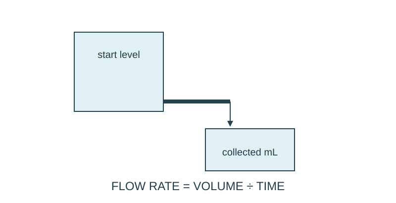

Job 22 · Measure a flow rate
A repeated volume/time investigation with a controlled comparison.
110 minutes • Tape measure + pocket notebook • Name: __________________ Date: __________
Materials: If arranged: tray, small pitcher, measuring cup, timer, towel, funnel or short tubing; otherwise supplied dataset and paper apparatus model.
Equipment alternative: Analyze supplied trials: baseline 240/12, 230/12, 250/12 mL/s pairs; changed 180/12, 190/12, 170/12. Build and label a paper apparatus model. Mark conclusions as dataset analysis, not a performed wet test.

Brief · 12 min
- Which pours faster:300 mL in 12 s or 250 mL in 8 s? Decide using a rate, not volume alone.
- Set up a dated notebook spread: sketch and readings on the left; calculation, decision, test, and revision on the right. Mark small sketches NTS unless drawn to a chosen scale.
- Work in pairs and rotate roles. Each student keeps an individual notebook and performs a tool action and a calculation.
Measure · 18 min
- Use a small contained water setup on a tray; the teacher approves the setup and keeps it away from electrical equipment.
- Select one collection interval or target volume. Keep starting water level, outlet arrangement, and collection method the same across repeats.
- Record at least three trials with volume in mL and time in seconds. Label supplied data if using the paper alternative.
Plan · 20 min
- Set up a volume/time table and predict the effect of changing one outlet condition.
- Choose only one change and state the controlled starting conditions.
- Identify a source of timing or reading uncertainty.
Worked example
A collection is 240 mL in 12 s. Find flow rate and predicted volume in 30 s if the rate stays constant. Flow rate = volume/time; volume = rate×time. 20 mL/s; prediction 600 mL in 30 s. A falling reservoir level can change the rate.
Make · 28 min
- Measure the baseline trials, then the changed condition.
- Calculate each trial’s rate and compare averages; keep unexpected values visible and explain any repeat.
- Draw the setup showing height difference, outlet, and collection point.
Test · 20 min
- Volumes and times are actual or explicitly supplied.
- The changed condition is separated from controlled conditions.
- Explanation connects the observed rate to the setup without claiming water flow and electric current are identical.
Explain · 12 min
- Complete the individual exit below before discussing answers.
- Add the test result, revision, and notebook page reference to your response. Use the notebook as evidence rather than retyping every page.
- Save the three selected responses and submit the lesson for teacher review. Show your physical work and notebook to the teacher. Clean up and return shared supplies.
Individual exit
A supplied trial collects 350 mL in 14 s. Find rate and predicted time for 500 mL at that constant rate. Why might the prediction fail for an emptying container?